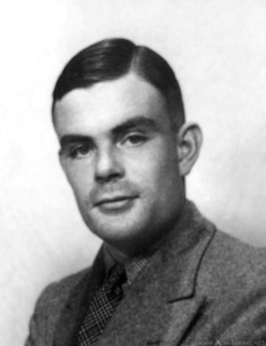

Alan Turing

País de nascimento:
Londres
Ano de nascimento:
1912
Reivindicação à fama:
###
Alan Mathison Turing (Londres, 23 de junho de 1912 — Wilmslow, Cheshire, 7 de junho de 1954) foi um matemático, cientista da computação, lógico, criptoanalista, filósofo e biólogo teórico britânico. Turing foi altamente influente no desenvolvimento da moderna ciência da computação teórica, proporcionando uma formalização dos conceitos de algoritmo e computação com a máquina de Turing, que pode ser considerada um modelo de um computador de uso geral. Ele é amplamente considerado o pai da ciência da computação teórica e da inteligência artificial.